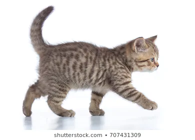

These are pictures of my favorite things
The following are my favorite websites
I like cute baby names found here.
I like getting coding tutorials on w3schools.
This is the list of my best friends:
These are my favorite foods:
Some of my favorite things are family, novels, taking walks in the evening and coding.